Дарья Лапай
Косметолог-эстетист, директор
- Сибирский межрегиональный учебно-методический центр «Косметология», 2013
- Медицинская сестра, ТБМК, 2014
- Профпереподготовка «Косметология» на базе РУДН, 2015
- Авторская программа «Лечение акне»
Естественный результат без страха и лишних процедур. Врачи с образованием СибГМУ и авторскими техниками подберут то, что нужно именно вашей коже.
Томск, проспект Фрунзе, 96А, кабинет 5Мы не делаем «новое лицо». Мы возвращаем вашему свежесть и чёткость: сначала консультация и честный план, потом процедура у врача, который знает, что делает.
врача из четырёх специалистов окончили лечебный факультет СибГМУ
авторские методики: «Premium Lips», «Глобальное омоложение», коррекция носа, лечение акне
средняя оценка по 46 оценкам в сервисе записи DIKIDI
Цены указаны за процедуру. Точный план врач составит на консультации.
Объём и форма губ на препаратах гиалуроновой кислоты. Авторская техника «Premium Lips».
от 10 900 ₽Подтяжка и уплотнение кожи без разрезов.
от 28 000 ₽Увлажнение, плотность и сияние кожи изнутри.
от 6 000 ₽Запускает выработку собственного коллагена: кожа плотнее, контуры чётче.
от 16 000 ₽Чёткий овал лица и выраженные скулы без операции.
от 14 000 ₽Очищение, обновление и выравнивание тона кожи.
от 400 ₽Два вопроса — и вы увидите подходящие направления и цены. Окончательный план врач составит на консультации.
Что хочется изменить?
Был ли у вас опыт инъекционных процедур?
Можно начать с этого
Листайте карусель. Наведите курсор или нажмите на фото, чтобы сравнить «до» и «после».
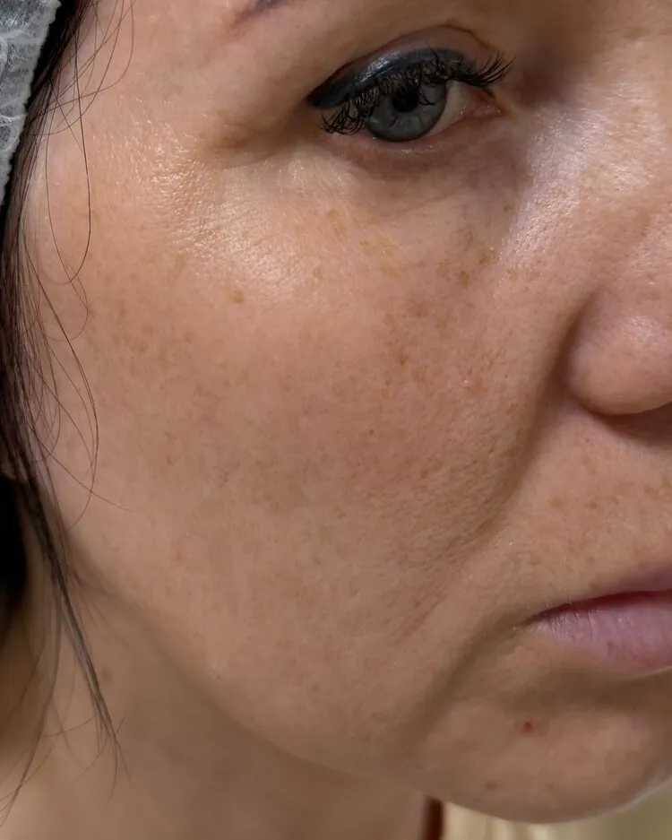
 ДоПосле
ДоПосле

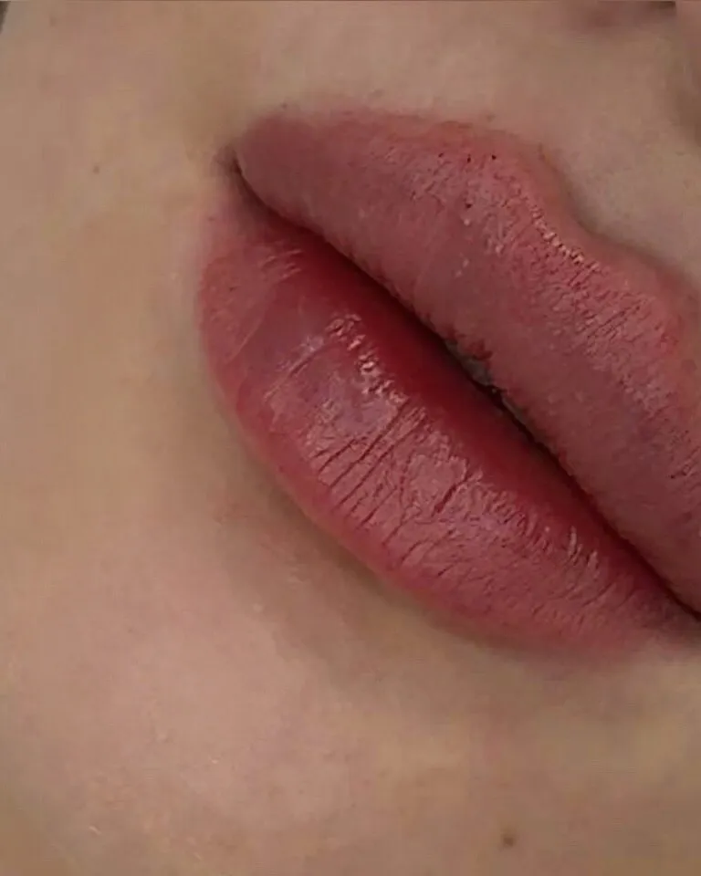
ДоПосле
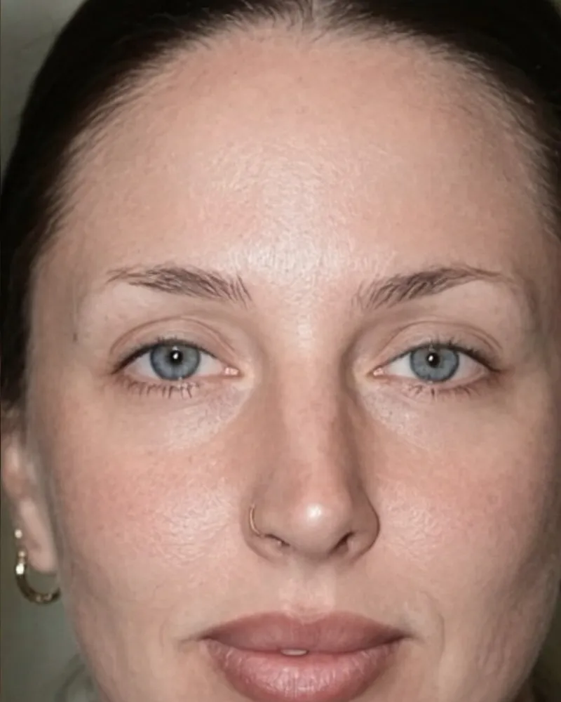
ДоПосле
 ДоПосле
ДоПосле

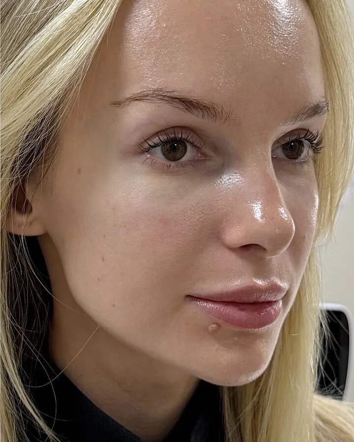
ДоПосле
 ДоПосле
ДоПосле
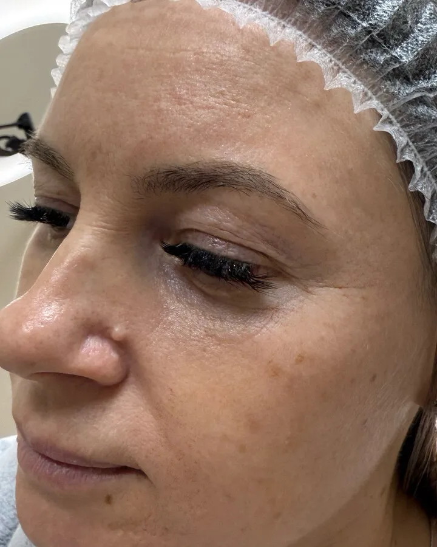
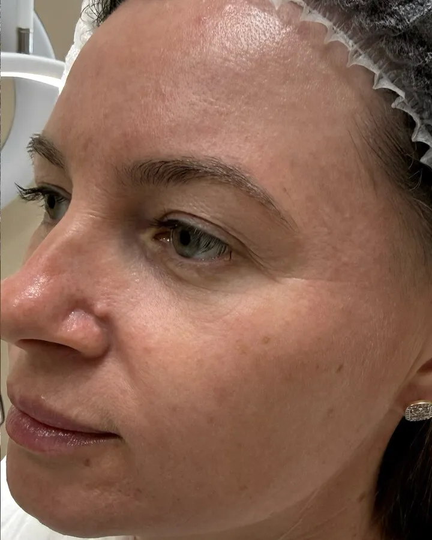
ДоПосле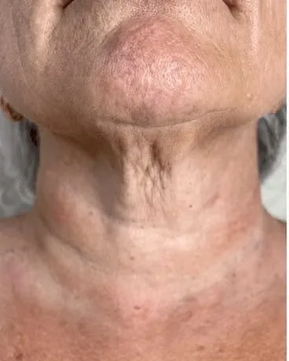
 ДоПосле
ДоПосле
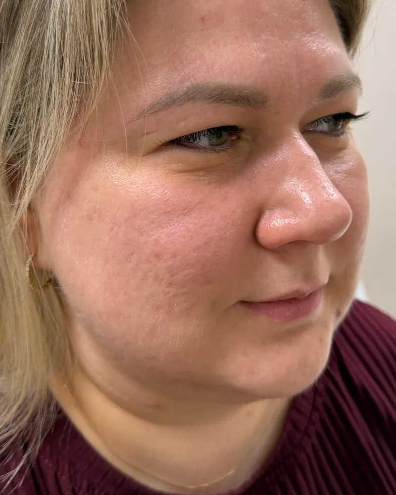
 ДоПосле
ДоПосле
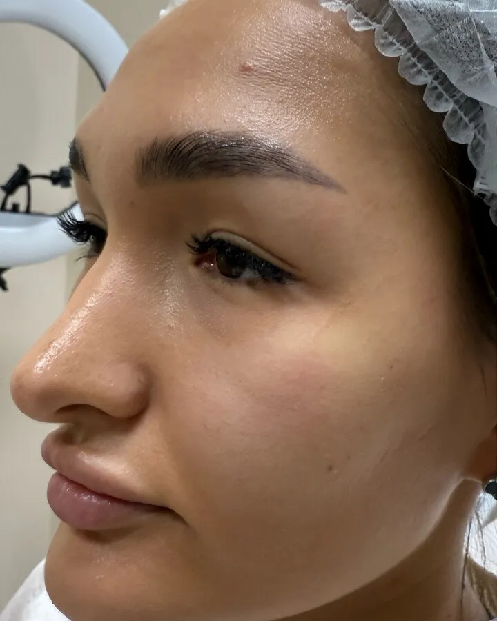
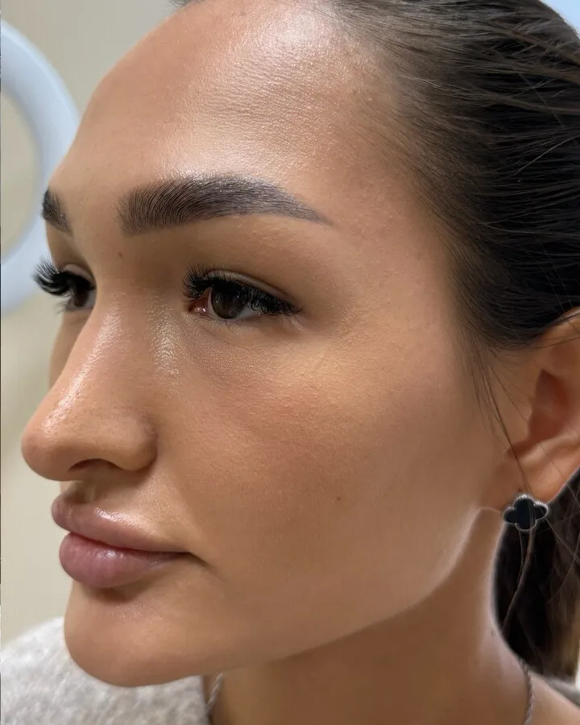
ДоПослеРезультат индивидуален и зависит от исходного состояния кожи.
Все результатыКороткие видео с процедур в нашем кабинете. Листайте вправо, нажмите на видео, чтобы включить звук.
К каждому специалисту можно записаться напрямую.
Косметолог-эстетист, директор
Врач дерматокосметолог, ведущий косметолог
Врач гинеколог-хирург, косметолог-инъекционист
Врач дерматокосметолог
Спокойные тёплые тона, мягкие кресла в зоне ожидания и процедурный кабинет с профессиональным оборудованием. Здесь можно выдохнуть перед процедурой.
О кабинете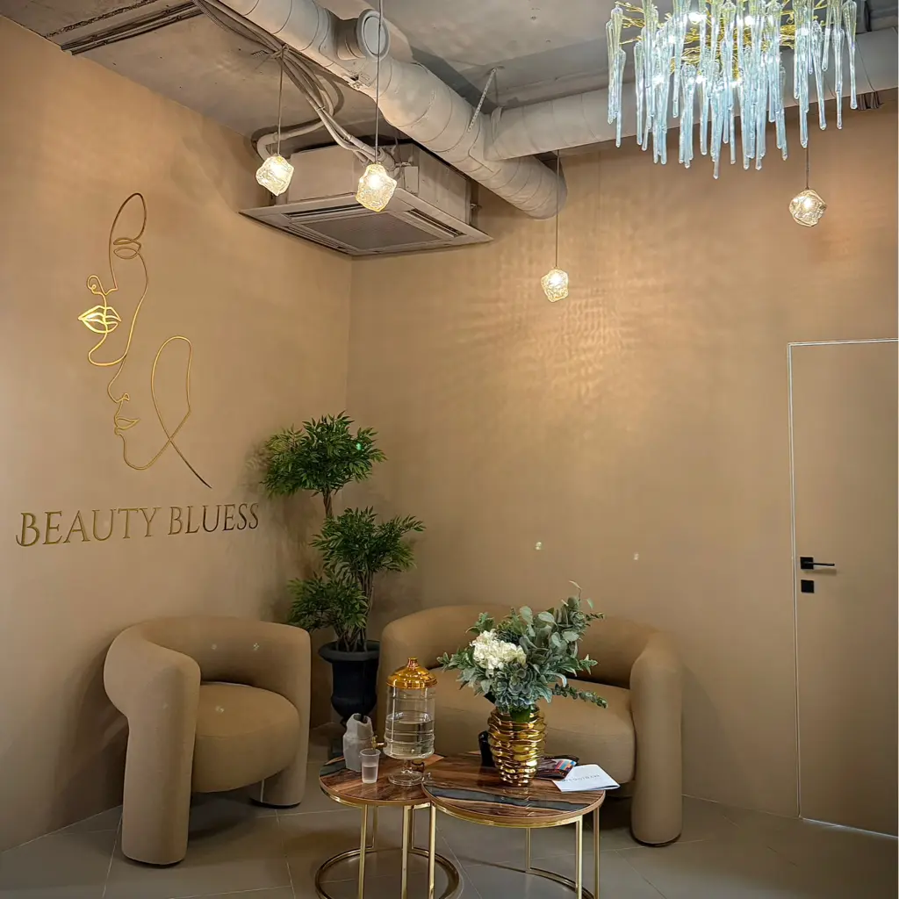
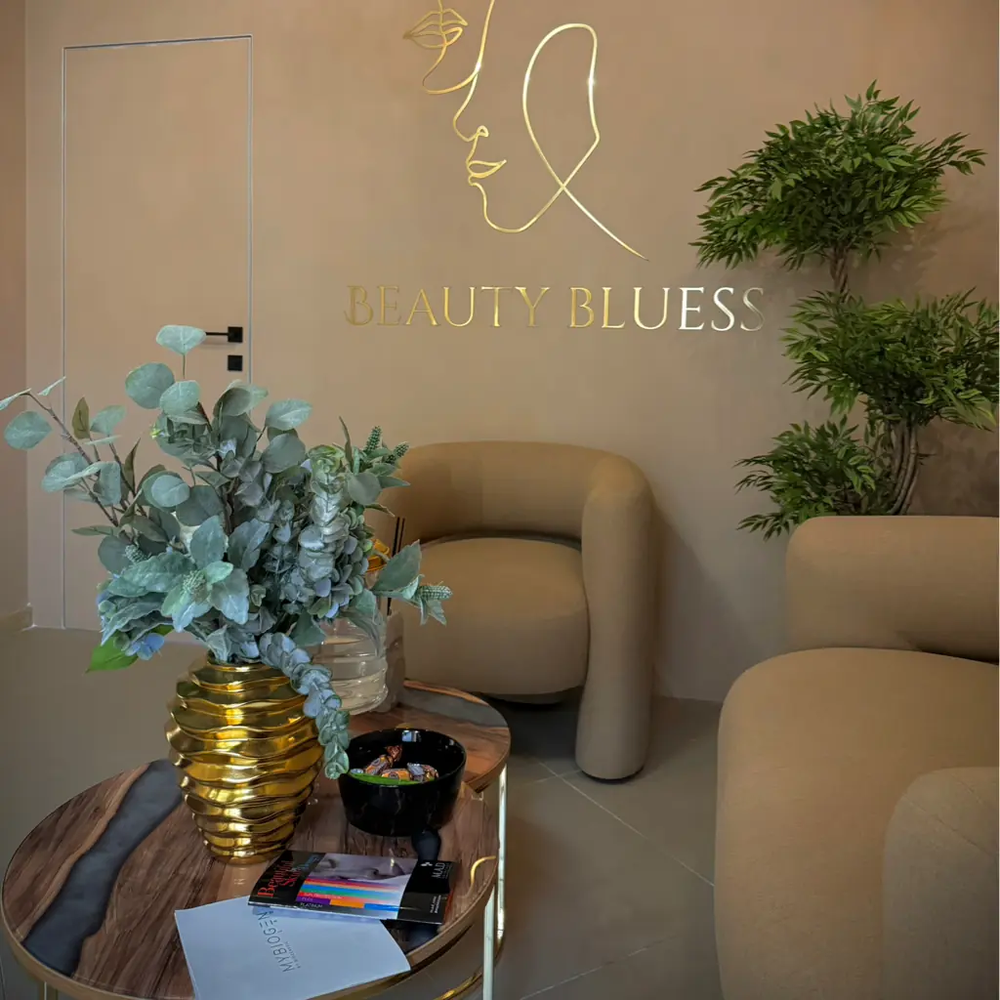
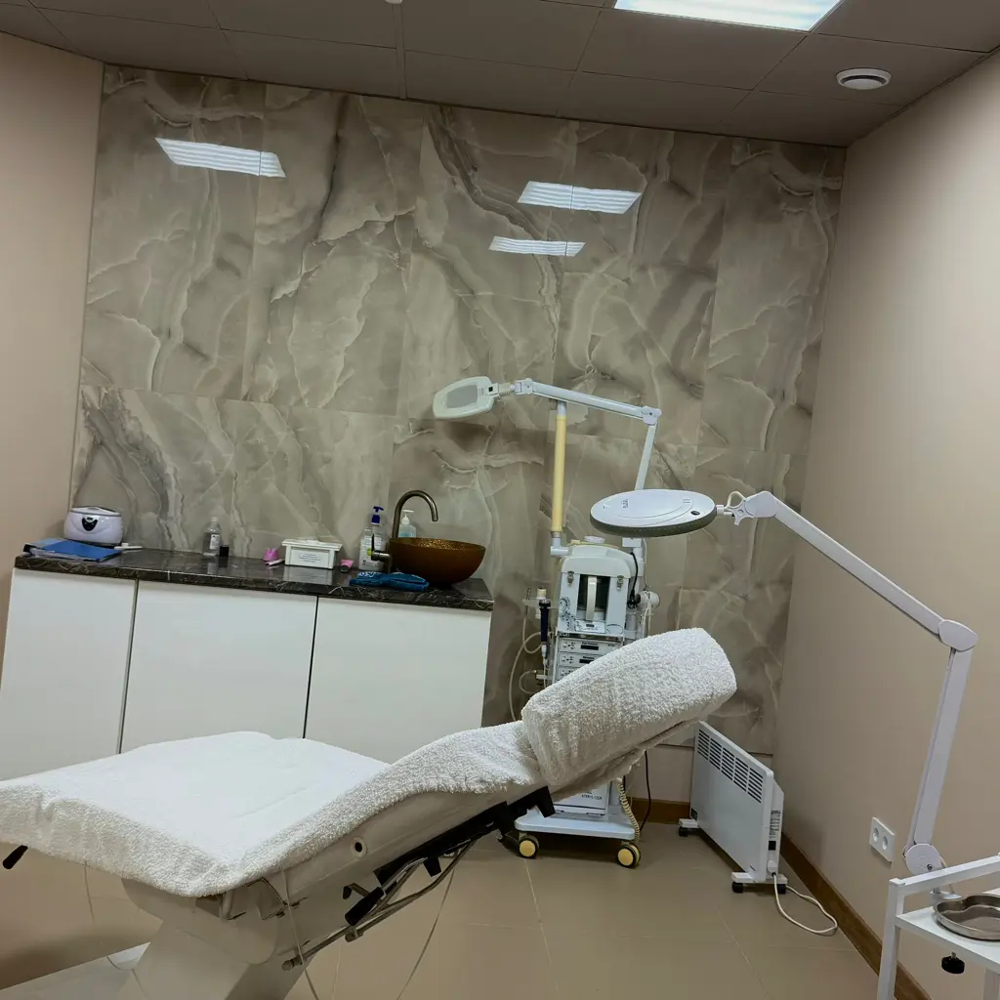
Врач осматривает кожу, выясняет задачу и противопоказания.
Вы получаете план процедур и понятную стоимость до начала работы.
Процедуру проводит специалист, к которому вы записались.
Объясняем процедуры простым языком: как проходят, чего ждать и как подготовиться.
Что происходит на приёме, сколько держится отёк, когда оценивать результат и как ухаживать за губами в первые две недели.
Чем биоревитализация отличается от филлеров, какие задачи решает и почему одной процедуры обычно мало.
Как солнце связано с пигментацией после пилинга, кому сезон не поможет и почему солнцезащитный крем нужен и в ноябре.
Врач осмотрит кожу, ответит на вопросы и предложит план с понятной стоимостью.
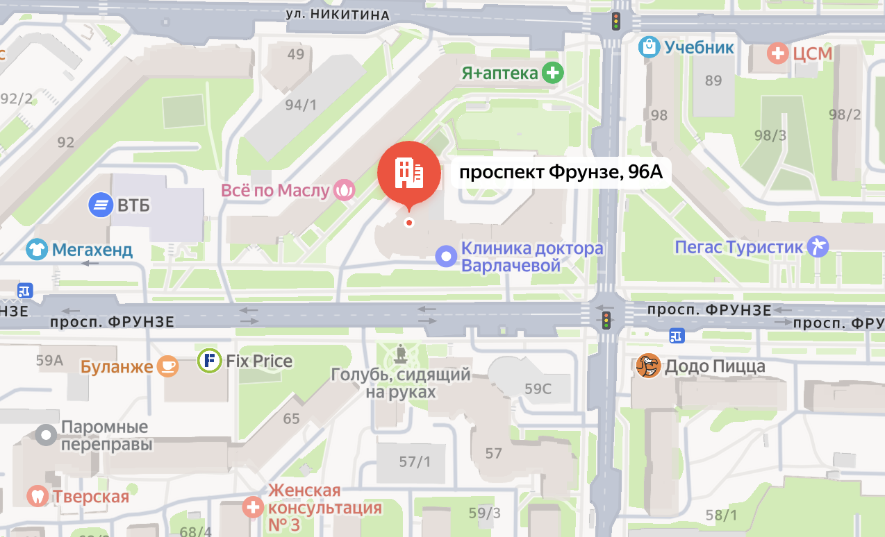